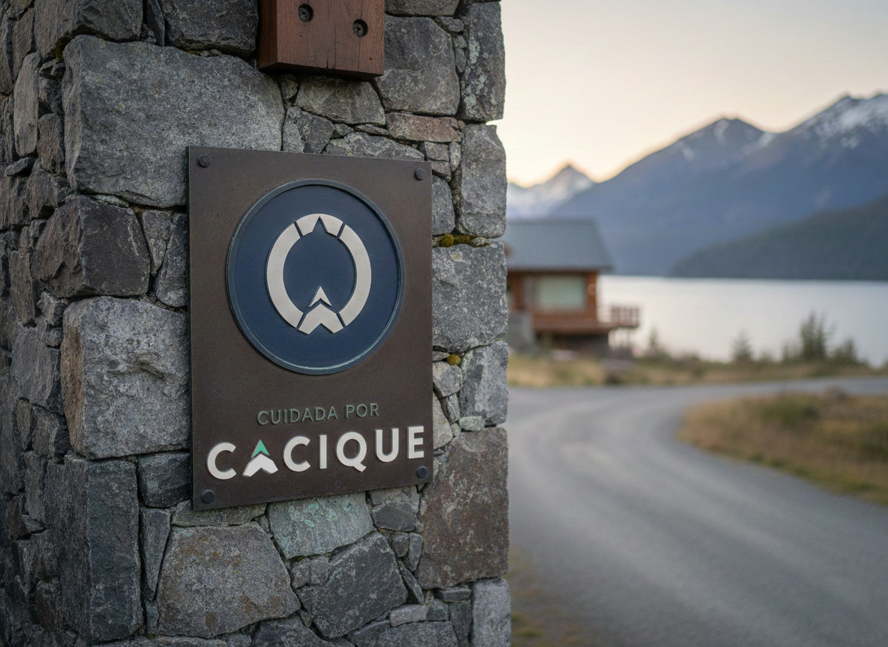
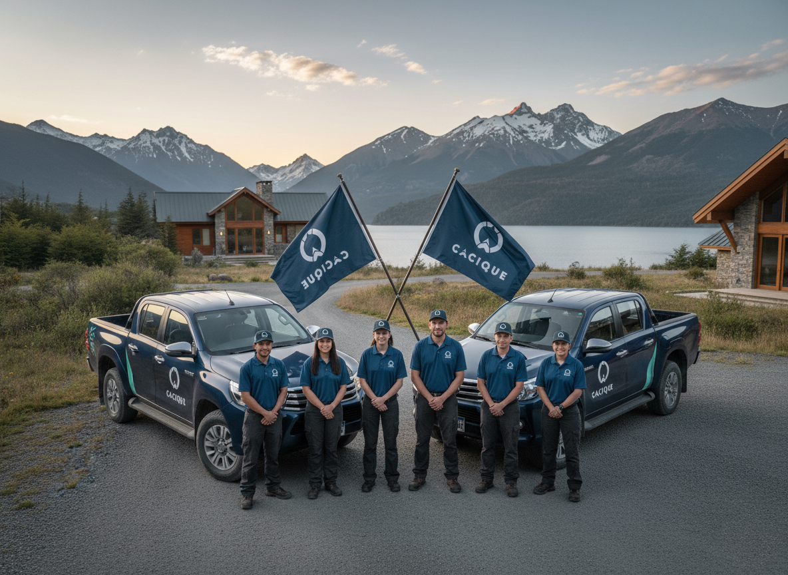

Cacique
Una marca que tenía que decir Patagonia y precisión al mismo tiempo — sin caer en la facilidad de una pluma.

Villa La Angostura · Neuquén
Con Lucía Domínguez · Al Sur Studio
Proyecto cerrado
Isologo, 3 variantes, manual y archivos
Cacique reúne un equipo de especialistas que cubre todo lo que una vivienda necesita: plomería, techos, electricidad, la caldera antes del invierno. Un solo lugar donde pedir, en vez de buscar a cada oficio por separado.
El servicio se apoya en algo simple: saber exactamente dónde está el problema y resolverlo sin que haya que explicar nada. Eso pedía una identidad de oficio, no de inmobiliaria ni de plataforma genérica.
Se lanzaron en Villa La Angostura, con la intención de abrir a otras plazas más adelante. El encargo fue acotado y así se mantuvo: el kickoff de la identidad. Lo trabajé con Lucía Domínguez, de Al Sur Studio.

Pantone 447 C
C20 M0 Y0 K90
Pantone 309 C
C100 M60 Y60 K50
Pantone 3375 C
C53 M0 Y0 K36
Un gris grafito de herramienta como base, el azul profundo del lago para los plenos y un verde agua que aparece en dosis chicas: el corte diagonal de la camioneta, el vértice de la flecha, un detalle en la placa.
Medium
Titulares. Palo seco, muy legible, con la caja alta ancha que le da presencia sobre foto.
Párrafos y textos. Sostiene el aire visual sin competir con el titular.
Vertical, horizontal y logotipo suelto para casos puntuales. Cada una con su espacio de seguridad.
250, 150 y 20 px en digital; 90, 50 y 5 mm en impreso. Diferente tamaño, diferente variante.
Dieciséis casos ilustrados, incluido el más probable acá: la marca sobre fondo fotográfico sin contraste.

Un kickoff bien cerrado alcanza para que la marca camine sola.
No siempre hace falta acompañar la producción. Con el sistema definido, el manual claro y los archivos entregados, el cliente lo aplica mejor de lo que uno espera. Acá, además, la marca tenía que quedar lista para lo que el negocio todavía no era: más oficios, más servicios y otras plazas además de Villa La Angostura.
Desarrollo realizado junto a Lucía Domínguez — Al Sur Studio.